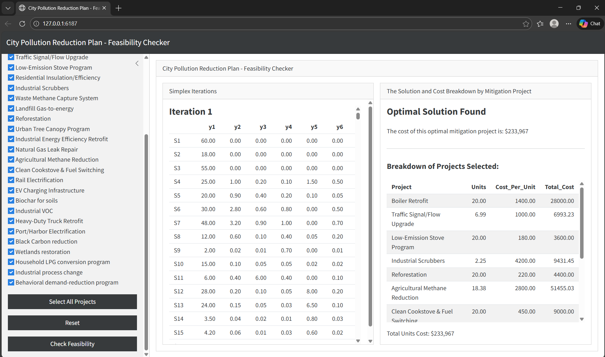
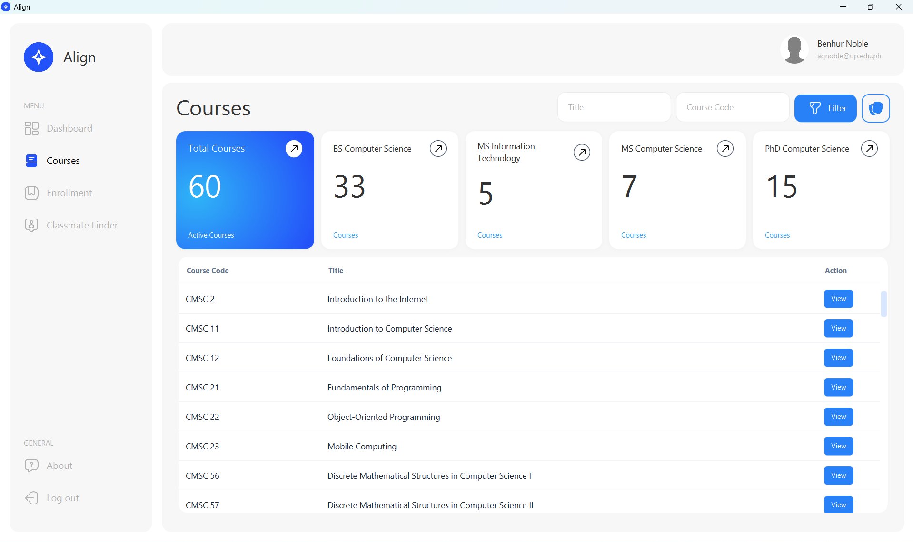
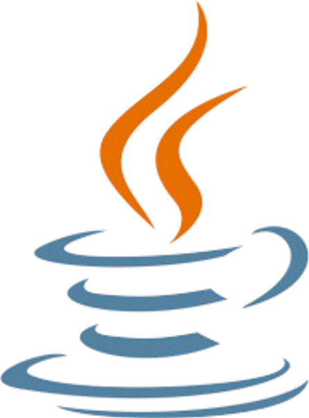
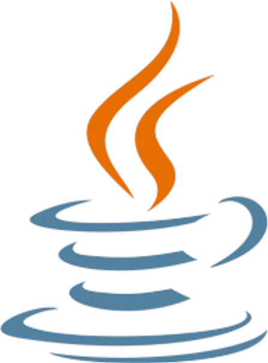

Hello, I'm Benhur Noble
I'm a graduating Computer Science student from the University of the Philippines Los Baños, freelance UI/UX Designer and Developer based in Laguna, Philippines. I strive to build web applications that are immersive and user-friendly through carefully crafted code and user-centric design.Previous Projects

Feasibility Checker System for City Pollution Reduction Planning

Mini Academic Management System
Skills
 


Autobiography
Hello, I'm Alexus Benhur Q. Noble! I am a Computer Science student at the University of the Philippines Los Baños (UPLB). My journey into computer science began with simple curiosity, wanting to understand how the technologies I used every day actually worked behind the scenes.
I am a great candidate for the position as I possess technical skills the position requires. I am both grounded by theoretical knowledge and practical application with few years of experience.